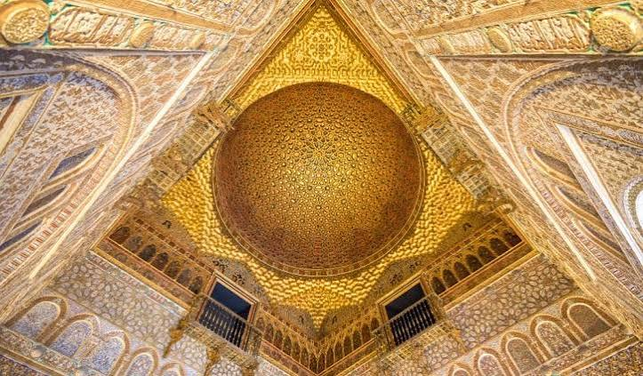

• Siglo X: Su origen se remonta al año 913, cuando el califa de Córdoba Abderrahmán III ordenó construir un recinto de gobierno fortificado llamado Dar al-Imara sobre la antigua Hispalis romana.
• Época Almohade: En el siglo XII, los almohades ampliaron considerablemente la fortaleza añadiendo nuevas murallas, torres y patios.
El Real Alcázar de Sevilla tiene más de 1.100 años de historia, ya que su construcción comenzó en el año 913 y ha sido ampliado y modificado a lo largo de los siglos.
En este enlace podras obtener mas informacion:Real Alcázar de Sevilla